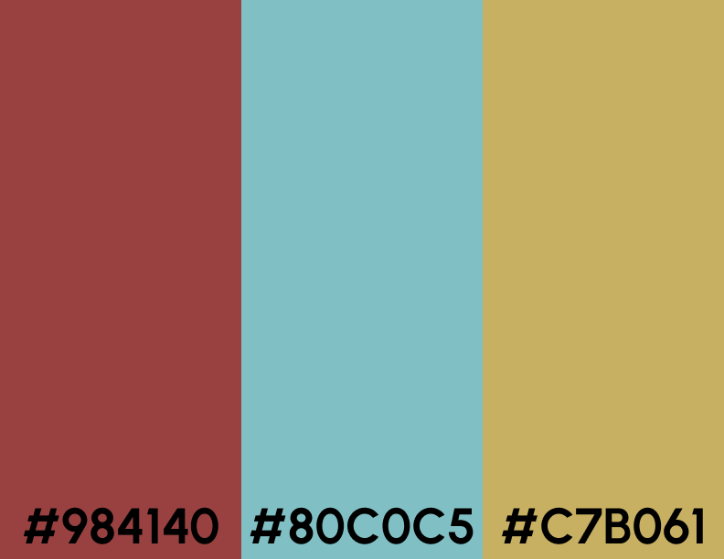
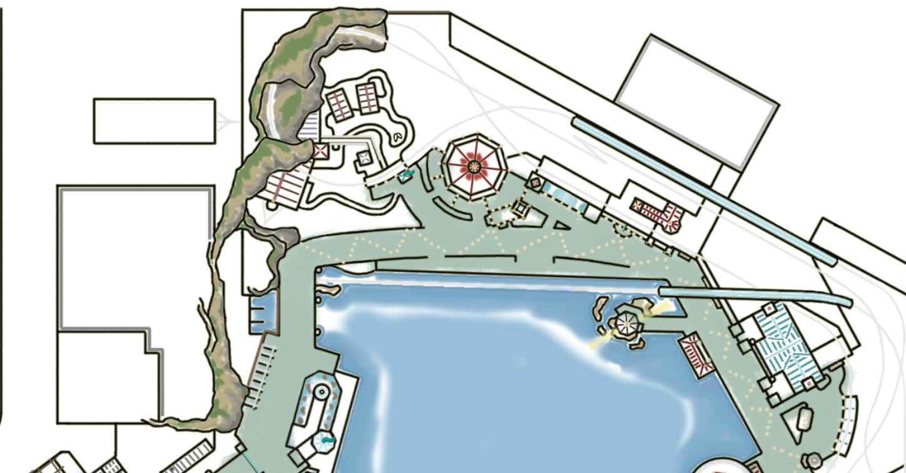
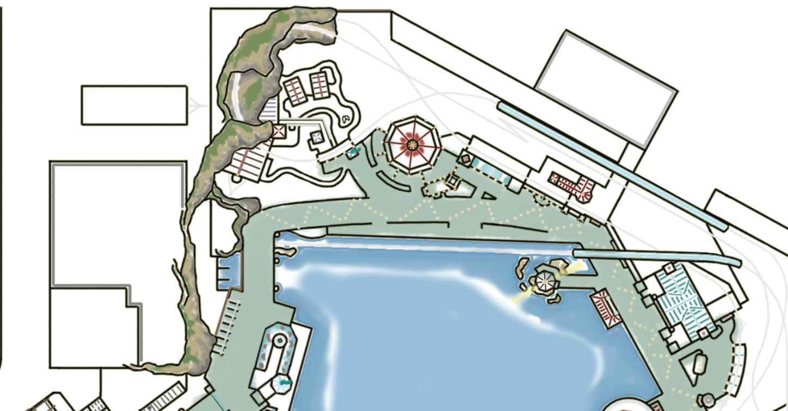

Project Two
Illustration & case study
Background
In the world of theme park design, Disney California Adventure in Anaheim, California is a model for numerous missteps before becoming what it is today. The park’s overarching theme aimed to capture and honour the vast state of California within a single entertainment destination. When it opened, it struggled to offer an engaging and inspirational experience that both the state of California and Disney’s products traditionally embody.
Goal
My goal was to redesign and illustrate a different scenario in which the park would have been successful in capturing and honouring California culture in a Disney theme park format.
-Personal Project in early 2023
-Tools:
-Individual
Concept
In this redesign concept, Disney California Adventure is divided into six themed “lands” that each draw from different aspects of California’s history and influential locations. I decided to take inspiration from a variety of real-world locations, including the current theme park that exists today.
Paradise Pier was an existing area of the theme park that brought to life traditional California beaches and boardwalks. In this iteration, I first established a fun, but classic colour scheme for the land.
I looked at the Pacific Coast Highway, a major route along the coast to influence the design, which contains a range of cliffs extending along the water.
 

A new aspect of the design is Golden Valley, a land that honours rural parts of California, including Wine Country and vintage Gold Rush towns.


Takeaway

From this concept, I have been able to better explore what makes immersive design compelling, and how one can have an entertainment destination but maintain elements of education, appreciation, and discovery for rich cultures and traditions.
Return to Projects